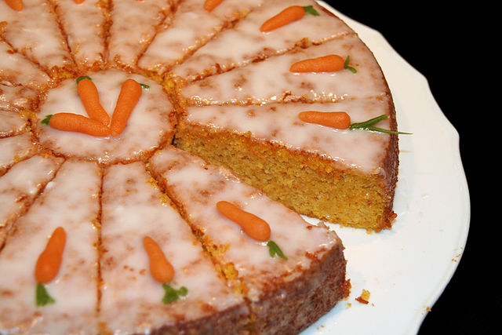

Delicious Carrot Cake

What is Carrot Cake?
Carrot cake is cake that contains carrots mixed into the batter. Most modern carrot cake recipes have a white cream cheese frosting. Sometimes nuts such as walnuts or pecans are added into the cake batter, as well as spices such as cinnamon, ginger and ground mixed spice. Fruit including pineapple, raisins and shredded coconut can also be used to add a natural sweetness.
Ingredients
- 2 cups white sugar
- 3/4 cup vegetable oil
- 3 eggs
- 1 teaspoon vanilla extract
- 3/4 cup buttermilk
- 2 cups grated carrot
- 1 cup flaked coconut
- 15 ounces crushed pineapple
- 2 cups all-purpose flour
- 2 teaspoons baking soda
- 2 teaspoons ground cinnamon
- 1 1/2 teaspoons salt
- 1 cup chopped walnuts
- 1/2 cup butter
- 8 ounces cream cheese
- 1 teaspoon vanilla extract
- 4 cups confectioners' sugar
Directions
- Preheat oven to 350F
- Grease 9/13 inch baking pan
- In a large bowl mix together: sugar, oil, vanilla, and buttermilk
- Stir in carrots, coconut, vanilla, and pineapple
- In a separate bowl combine: flour, baking soda, cinnamon, and salt
- Gently stir into carrot mixture
- Stir in chopped nuts
- Spread batter into prepared pan
- Bake for 55 minutes
- In a medium sized mixing bowl combine: butter, cream cheese, vanilla, and confectioners' sugar
- When mixture is creamy frost cake while in pan
Recipe Found Here